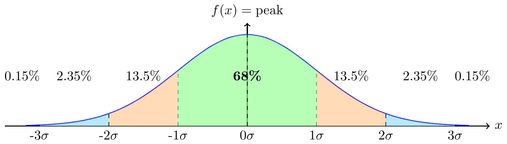
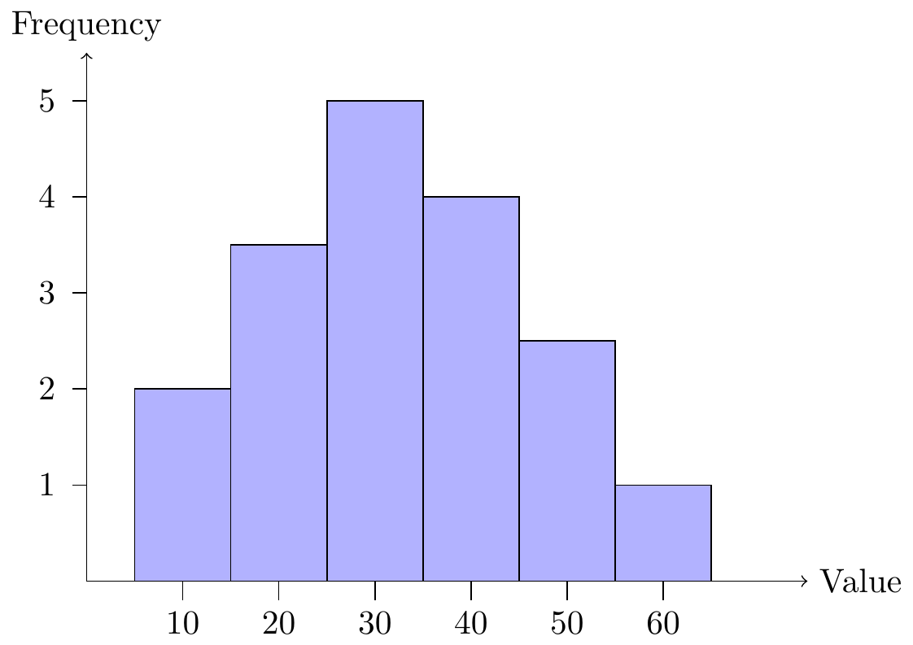
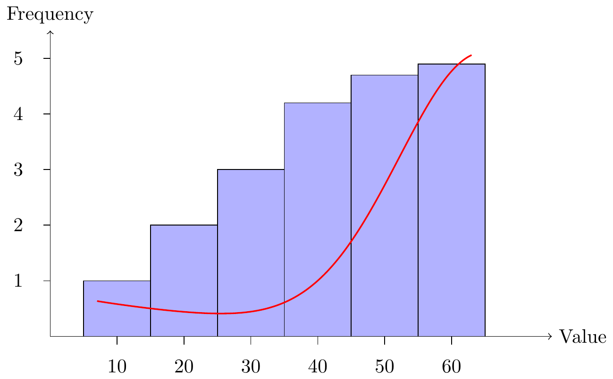

Chapter 1 Descriptive Statistics and an Introduction to R
1.1 Introduction
Intuitively, statistics can be considered the science of uncertainty. Formally,
Definition 1.1 Statistics is the science of collecting, classifying, summarizing, analyzing and interpreting data.
Population, Sample, Parameter
In statistics, researchers need to observe behavior, pattern, trends and other types of data to give a conclusion. To make the conclusion more persuasive, researchers require huge amount of data to support them, that’s why study statistics need population.
Definition 1.2 In statistics, a population is a set of similar observations which is of interest for some experimental questions. It can be a set of existing objects such as all people in Canada, or hypothetical group of existing objects such as the set of all possible hands in a game of poker.
However, data collection from population is a lot work. Usually, researchers select a finite number of observations to study.
Definition 1.3 It refers to a selection of a subset from population that researchers use it to estimate population characteristics.
Now, we have already chosen a sample, but how do we use it to estimate population characteristics? This is the point where parameter comes to play.
Definition 1.4 A parameter is a quantity of statistical population which summerizes characteristics of the population. For example, mean, variance and standard deviation.
Descriptive and Inferential Statistics
Now, we have set everything we need. A population, a chosen sample in that population with its parameters. Next step is studying. There are two major types of analysis: descriptive and Inferential statistics. In this section, we are only going to give you a rough idea about what they are, more detailed materials will be introduced in later chapters.
Definition 1.5 It refers to the summation of all quantitive values that describe characteristics of the population. Usually, we use descriptive statistics to summerize characteristics of a data set.
Furthermore, we use inferential statistics to do statistical analysis.
Definition 1.6 It refers to the process of using data analysis to indicate properties of a population. For example, testing hypothesis and confidence interval (both will be introduced in later chapters).
Qualitative and Quantitative Data
At this point, assume that we have finished all procedures such as obtaining parameters and analyzing properties. Now, another important thing is illustrating all the discovery.
Definition 1.7 This type of illustration refers to showing categorical data. For example, lecture notes from a course, open-question survey.
To illustrate numerical data, we use quantitative data.
Definition 1.8 Unless the previous type of illustration, quantitative data is represented numerically, including anything that can be counted, measured, or given a numerical value. For example, STA258 final mark score range from 100 different students who have taken this course.
1.2 Descriptive Statistics
Previously, we defined descriptive statistics. Now, let’s introduce what
exact they are.
Sample Mean, Variance and Standard Deviation
Sample mean (or sample average) is the average value of a sample which is selected from an interested population of an experiment. Usually, the sample mean is used to estimate population mean. In other words, we say that the sample mean is an estimator of population mean.
Definition 1.9 Let \(x_1, x_2, x_3, ..., x_n\) be a sample of data points. We define sample mean of the sample data points (\(\bar{x}\)) as the following: \[\bar{x} = \frac{1}{n} \sum_{i=1}^{n} x_i.\] Also, we define sample variance of the sample data points (\(s^2\)) as: \[s^2 = \frac{1}{n-1} \sum_{i=1}^{n}(x_i - \bar{x})^2.\] Moreover, the standard deviation of the sample of data points (\(s\)) is: \[s = \sqrt{s^2}, \quad \text{for } s > 0.\]
Now, let’s move to variance. It refers to the expected value of the squared deviation from the mean of a random variable in a population. Similarly, we do have sample variance as well, which is the expected value of the squared deviation from the mean of a random variable in a selected sample. At this point, we can still use sample variance to estimate population variance with adjustment, because the sample variance may differ significantly based on what data points are chosen from that population.
Definition 1.10 Let \(x_1, x_2, x_3, ..., x_n\) be a sample of data points, we define sample variance of the sample data points (\(s^2\)) as: \[s^2 = \frac{1}{n-1} \sum_{i=1}^{n}(x_i - \bar{x})^2, \text{ where $\bar{x}$ is the sample mean of the data points.}\]
Next is standard deviation. It is a measure of the amount of variation of the values of a variable about its mean. If standard deviation is relatively larger, then data points are widely spread out from the mean. Otherwise, data points stay close from the mean. Also, standard deviation is obtained by taking squared root from variance which is dependent on the choices of data points as well. To use sample standard deviation as an estimator to population standard deviation, we still need to adjust it.
Definition 1.11 Let \(x_1, x_2, x_3, ..., x_n\) be a sample of data points. The standard deviation of the sample of data points (\(s\)) is: \[s = \sqrt{s^2}, \quad \text{for } s > 0.\]
Median and Mode
The median and mode are two important measures of central tendency used in statistics to summarize and understand data. The median represents the middle value in a sorted dataset, giving a sense of the center that is not affected by extreme values or outliers. In contrast, the mode is the value that appears most frequently in a dataset, making it useful for identifying common or repeated observations.
Definition 1.12 Let: \(x_1, x_2, x_3, ... , x_n\) be a collection of data points which is arranged in ascending order from the smallest value to the largest value (or descending order from the largest value to the smallest value in that collection). The median of the given collection of data points is the middle value in that collection, which equally spreads the collection into two parts. Half of all the collection values are above the median value and the rest of the values in the collection is below the median value.
Case 1: when n is an odd number. (i.e. \(1, 3, 11, 237,...\)). Then, the median \(M\) is defined as: \[M = \frac{n+1}{2} \text{, where n represents the $n^{th}$ position}.\]
Case 2: when n is an even number (i.e. \(2, 6, 100, 500,...\)). Then, the median \(M\) is: the average value of \(\frac{n}{2}\)’s and \(\frac{n+2}{2}\)’s position, where n represents the \(n^{th}\) position.
Now, let’s introduce mode.
Definition 1.13 It refers to a value that appears the most frequent than the appearance of all other values in a given dataset.
Percentile and Quartile
Percentiles and quartiles are statistical measures used to describe the distribution of data. A percentile indicates the value below which a given percentage of observations fall, helping to understand relative standing within a dataset. Quartiles, a specific type of percentile, divide the data into four equal parts (Q1, Q2/median, and Q3), providing insights into the spread and central tendency.
Definition 1.14 Let: \(x_1, x_2, ..., x_n\) be a collection of data points in either ascending order. Percentile is denoted as: \(p^{th}\), which indicates \(p \%\) of observations are below to a such value. Quartiles, are special cases of percentile which equally spread the collection of data into four parts. Each part contains \(25\%\) of the entire collection. More specifically, we define quartiles as the following:
\(Q_1\): the \(25\) percentile (or \(25^{th}\)), which shows that \(25\%\) of the data points are below the value \(Q_1\).
\(Q_2\): the \(50\) percentile (or \(50^{th}\)), which shows that \(50\%\) of the data points are below the value \(Q_2\).
\(Q_3\): the \(75\) percentile (or \(75^{th}\)), which shows that \(75\%\) of the data points are below the value \(Q_3\).
\(Q_2\) is qual to median.
Moreover, we use \(Q_3 - Q_1\) to calculate interquartile range (I.P.R), which shows the spread of the whole data set.
Skewness and Symmetry
The two terms ‘skewness’ and ‘symmetry’ are used to describe the shape of probability distribution. There are two types of skewness: left (or negative) skew and right (or positive) skew. In real life, a famous distribution highly used in hypothesis testing which is \(\chi_{n}^{2}\) with \(n\) degrees of freedom, is right skewed probability distribution function. Another example regarding to symmetry is normal distribution such that its probability under its curve greater than \(\mu\) is same as the probability below than \(\mu\). Now let’s introduce the proper definition of skewness and symmetry.
Definition 1.15 Skewness refers to such a measure of the asymmetry of the probability distribution of a real-valued random variable about its mean. The skewness value can be positive, zero, negative or undefined.
Now, let’s break down the main definition of skewness and symmetry:
Definition 1.16 By observing given probability distribution curve, if the left tail of the curve is longer than the right tail the mass of the distribution is concentrated on the right of the figure, then we say that probability distribution is left skew or negative skew. (See figure below)

Figure 1.1: An illustration of a left (negative) skewed distribution.
Definition 1.17 By observing given probability distribution curve, if the right tail of the curve is longer than the left tail the mass of the distribution is concentrated on the left of the figure, then we say that probability distribution is right skew or positive skew. (See figure below)

Figure 1.2: An illustration of a right (positive) skewed distribution.
Symmetry is a special case of skewness when the value of skewness is \(0\).
Definition 1.18 In statistics, symmetry s a probability distribution is reflected around a vertical line at some value of the random variable represented by the distribution. Probability under the curve below that value is equal to probability under the curve greater than that value. (see figure below)

Figure 1.3: An illustration of symmetric distribution. Area under this curve on the left hand side of \(\mu = 0\) is same as the area on the right hand side under the curve.
Since symmetry is a special case, so that it has a unique property as the following:
Theorem 1.1 For any symmetric (bell-shaped) curve, let \(\mu\) be its mean and \(\sigma\) be its standard deviation, the following probability set function is true:
\(1.\) \(P(\mu - \sigma < X < \mu + \sigma) = 68.27\%;\)
\(2.\) \(P(\mu - 2\sigma < X < \mu + 2\sigma) = 95.45\%;\)
\(3.\) \(P(\mu - 3\sigma < X < \mu + 3\sigma) = 99.73\%.\)

Figure 1.4: An illustration of the empirical rule.
Practice Example
Example 1.1 Let: \(x_1 = 1, x_2 = 3\) and \(x_3 = 7\). Calculate the sample mean, sample
variance and sample standard deviation for this collection of data
points.
Solution (all results are kept in four digits):
By Definition \(1.9 \text{, } 1.10 \text{, } 1.11\), sample mean:
\[\bar{x} = \frac{1+3+7}{3} \approx 3.6667.\] Then, we use sample mean
to calculate sample variance:
\[s^2 = \frac{1}{3-1} \times [(1-3.6667)^2+(3-3.6667)^2+(7-3.6667)^2] \approx 9.3333.\]
Finally, we take the square root of sample variance to get sample
deviation, and remember that \(s > 0\): \[s = \sqrt{s^2} \approx 3.0551.\]
Example 1.2 Given two distinct collections of data points: \(S_1\) = \(\{2, 4, 6\}\) and
\(S_2\) = \(\{1, 5, 16, 28\}\). Calculate the median of both two sets.
Solution:
For \(S_1\), since \(n = 3\) which is an odd number, so by
\(Definition \text{ } 1.3\), \(M_{S_1} = 4\). For \(S_2\), \(n = 4\) in this
case, so that we need to calculate the average of \(\frac{n}{2}\) and
\(\frac{n+1}{2}\). Then, \[M_{S_2} = \frac{5+16}{2} = 10.5.\]
Example 1.3 Consider the data set \(S =\)
\(\{4, 25, 30, 30, 30, 32, 32, 35, 50, 50, 50, 55, 60, 74, 110\}\).
Calculate its median and \(Q_1\) (\(25^{th}\)).
Solution:
Simply counting the number of data points, \(n = 15\), such that \(M_{S}\) =
\(\frac{15 + 1}{2}\) = \(8\). Thus, the \(8^{th}\) value in the set which is
\(35\).
Since we know the median of this collection of data points, we just need
to find the median of the lower half of this data, which is exactly
going to be \(25\) percentile (\(25^{th}\)). In the lower half of the given
collection (all values below the median), \(n_{lower} = 7\). By
\(Definition \text{ } 1.3\), then median of the lower half (\(25^{th}\)) is
going to be:
\[25^{th} = \frac{7+1}{2} = 4, \text{ the $4^{th}$ position in the data set}.\]
Thus, \(Q_1\) (\(25^{th}\)) \(= 30\). To find \(Q_3\) (\(75^{th}\)), apply the
same strategy will guide you to find the correct answer, and we leave
this as an exercise to you.
1.3 Graphical Techniques
In statistics, there are lots of types of graph to illustrate data, for example histograms and box-plots. This technique is used in the field of statistics for data visualization. Our objective is to both be able to identify some classical types of graph and interpret key statistical values (descriptive statistical values) from it.
1.3.1 Histograms
Introduction to Histograms
Histogram is a graphical representation of data that uses bars to display the frequency distribution of a dataset. Unlike bar graphs, which represent categorical data, histograms group numerical data into intervals (bins) and show how many values fall into each range. This makes histograms ideal for visualizing the shape, spread, and central tendency of continuous data, helping identify patterns such as symmetry, skewness, and outliers.

Figure 1.5: An illustration of a histogram.
Advantages and Disadvantages of Histograms
Advantages of Histograms:
\(1.\) Histograms are easily to used for visualise data (relatively). It allows us to get the idea of the "shape" of distribution (i.e. skewness which will be discussed late in this section).
\(2.\) It is also flexible that people are able to modify bin widths.Disadvantages of Histograms:
\(1.\) It is not suitable for small data sets.
\(2.\) The values from histograms close to breaking points are likely similar, in fact they need to be classified into different bins (i.e. Student A and B scores 79 and 80 respectively in STA258, we consider a breaking point between 79 and 80. The two students have similar score, but student A is \(B+\) and student B is \(A-\) in GPA from).
Histograms with Skewness and Symmetry
A histogram visually represents the distribution of numerical data,
making it a useful tool for assessing skewness and symmetry. It is quite
straightforward to estimate the skewness of histograms by simply drawing
a curve above bins on the histogram.
Case 1: For a histogram to have a left (or negative) skew probability distribution:

Figure 1.6: An illustration of a histogram to have a left (or negative) skew probability distribution.
Case 2: For a histogram to have a right (or positive) skew probability distribution:

Figure 1.7: An illustration of a histogram to have a right (or positive) skew probability distribution.
Case 3: For a histogram to have a symmetric probability distribution:

Figure 1.8: An illustration of a histogram to have a symmetric probability distribution.
1.3.2 Box-Plots
A boxplot (or box-and-whisker plot) is a standardized way to display data distribution based on a five-number summary: minimum, first quartile (Q1), median (Q2), third quartile (Q3), and maximum. The box represents the interquartile range (IQR), while the whiskers show variability outside Q1 and Q3. Outliers are plotted as individual points. Boxplots efficiently compare distributions and highlight skewness, spread, and outliers. (See figure below)

Figure 1.9: An illustration of an annotated box-plot with whiskers and potential outliers.
Similar to histograms, we can still obtain information about skewness
and symmetry, by observing the cut from the line of Q2.
If the median (Q2) cuts the box with upper area smaller than lower area,
then we say that box-plot with left skew probability distribution. Or,
if the median (Q2) cuts the box with upper area larger than lower area,
then we say that box-plot with right skew probability distribution.
Otherwise, if the median (Q2) cuts the box with upper area equal to
lower area, then we say that box-plot with symmetric probability
distribution.

Figure 1.10: Box-plots showing negative skew, positive skew, and symmetry.
1.4 Introduction to R
R is used for data manipulation, statistics, and graphics. It is made
of: operations (\(+\),\(-\), \(<\)) which is for calculations on vectors,
arrays and matrices; a huge collection of functions; facilities for
making unlimited types quality graphs; user contributed packages (sets
of related functions); the ability to interface with procedures written
in C, C+, or FORTRAN and to write additional primitives. R is also an
open-source computing package which has seen a huge growth in popularity
in the last few years (Please use this website:
https://cran.r-project.org, to download R).
What is R-studio?
RStudio is a relatively new editor specially targeted at R. RStudio is
cross-platform, free and open-source software (Please use:
https://www.rstudio.com, to download Rstudio).
Make a Histogram Using R-studio
This is just a demonstration of how to start and use R-studio.
First of all, we need to know which dataset are we going to make into a histogram. In this case, as an example, we are going to use the waiting time in faithful in R-studio.
For any dataset, use the code: names(faithful) to get it. (inside the parentheses, type the names of variables you want in faithful dataset)
Then, we proceed with the code: hist(faithful$waiting) to get a basic plot.
# names of variables in faithful dataset;
names(faithful)
## Basic plot;
hist(faithful$waiting)- Furthermore, we can also get more information. For example, by keep proceeding with the code: hist(faithful$waiting,plot=FALSE)$breaks, R-studio will show you all the breaking points between histogram cells.
# breakpoints between histogram cells;
hist(faithful$waiting,plot=FALSE)$breaks
## [1] 40 45 50 55 60 65 70 75 80 85 90 95
## [13] 100
hist(faithful$waiting,plot=FALSE)$counts
## [1] 4 22 33 24 14 10 27 54 55 23 5 1